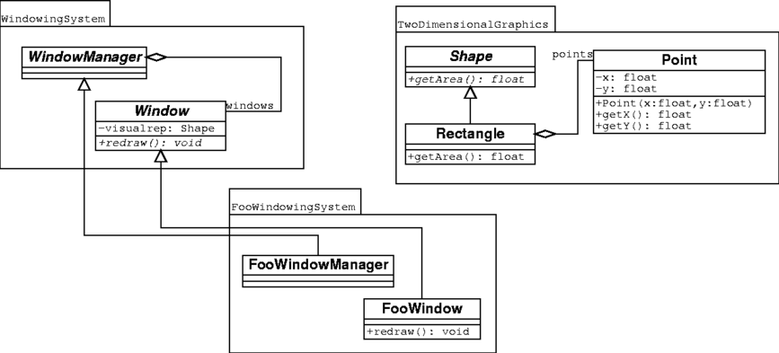

Je recherche en ce moment des outils qui me permettraient d'importer/exporter de l'uml pour un projet C++ que je vais faire cet été. L'idée est la suivante : je souhaiterais que les modifications de mon code soient répercutées sur un fichier contenant de l'uml sous un format quelconque, et je souhaiterais par ailleurs pouvoir générer du code à partir de ce format. Idéalement, une règle dans le Makefile, appelée à chaque génération du projet serait idéale pour ce genre de truc. À moins que j'ai mal compris, Umbrello est bien capable de générer du code, mais malheureusement l'import est une autre histoire : si celui-ci est bien capable d'importer une classe à partir du C++, en revanche il ne génère aucun diagramme (voir la page consacrée de l'aide):
Note that Umbrello UML Modeller will not create any kind of Diagram for showing your classes, they will only be imported into your Model so that you can use them later in any diagram you want.
J'ai aussi jeté un coup d'oeil du côté d'ArgoUml. Malheureusement, de ce côté non plus c'est pas la panacée puisqu'ici on ne parle que de java : moi, je veux du C++.
What is ArgoUML? ~ [...] ArgoUML also has the ability to reverse engineer compiling Java code and generate UML diagrams for it.
En allant inspecter les moteurs de recherche, j'ai fini par tomber sur un outil intéressant:dia2code. Celui-ci prend en entrée un schéma uml en dia, et génère du code dans le langage choisi. J'ai regardé la section examples du site, c'est assez convaincant. Pour ce schéma :

Les fichiers suivants seront générés :
foowindow.cpp 1/14
#include "foowindow.h"
void FooWindow::redraw ( ){
}
foowindow.h 2/14
#ifndef FOOWINDOW_H
#define FOOWINDOW_H
#include "window.h"
class FooWindow: public Window {
// Associations
// Attributes
// Operations
public:
void redraw ( );
};
#endif
foowindowmanager.cpp 3/14
#include "foowindowmanager.h"
foowindowmanager.h 4/14
#ifndef FOOWINDOWMANAGER_H
#define FOOWINDOWMANAGER_H
#include "windowmanager.h"
class FooWindowManager: public WindowManager {
// Associations
// Attributes
// Operations
};
#endif
point.cpp 5/14
#include "point.h"
Point::Point ( float x, float y ){
}
float Point::getX ( ){
}
float Point::getY ( ){
}
point.h 6/14
#ifndef POINT_H
#define POINT_H
class Point {
// Associations
// Attributes
private:
float x;
float y;
// Operations
public:
Point ( float x, float y );
float getX ( );
float getY ( );
};
#endif
rectangle.cpp 7/14
#include "rectangle.h"
float Rectangle::getArea ( ){
}
rectangle.h 8/14
#ifndef RECTANGLE_H
#define RECTANGLE_H
#include "point.h"
#include "shape.h"
class Rectangle: public Shape {
// Associations
Point points;
// Attributes
// Operations
public:
float getArea ( );
};
#endif
shape.cpp 9/14
#include "shape.h"
shape.h 10/14
#ifndef SHAPE_H
#define SHAPE_H
class Shape {
// Associations
// Attributes
// Operations
public:
virtual float getArea ( ) = 0;
};
#endif
window.cpp 11/14
#include "window.h"
window.h 12/14
#ifndef WINDOW_H
#define WINDOW_H
#include "shape.h"
class Window {
// Associations
// Attributes
private:
Shape visualrep;
// Operations
public:
virtual void redraw ( ) = 0;
};
#endif
windowmanager.cpp 13/14
#include "windowmanager.h"
windowmanager.h 14/14
#ifndef WINDOWMANAGER_H
#define WINDOWMANAGER_H
#include "window.h"
class WindowManager {
// Associations
Window windows;
// Attributes
// Operations
};
#endif
Pas mal. Il y a de l'idée. Maintenant, cherchons s'il existe le procédé inverse. J'ai trouvé trois outils capables de générer de l'uml dia à partir du C++ : cpp2dia, autodia, et medoosa. Autant vous dire tout de suite que rien de spécialement convaincant ne sort de ces programmes.
- Le dernier de ces 3 à avoir été mis à jour semble être autodia (2007). Autodia est un script perl qui peut parser plusieurs langage, mais il semblerait que le module C++ soit buggué. D'abord, la sortie est immonde et complètement enchevêtrée. Mais ça, ça s'édite avec dia (du moment que les associations sont bonnes, moi je suis content). Ensuite il prend mal les noms des classes puisqu'il m'a embarqué l'accolade ouvrante à chaque génération de classe (Je le soupçonne en fait d'avoir oublié de gérer les namespaces). J'ai tout de même écrit à l'auteur pour lui signaler le problème.
- cpp2dia est celui qui n'a pas été mis à jour depuis le plus de temps (mai 2003). Cependant, les screenshots ont l'air sympa. C'est un script tcl que j'ai réussi à faire marcher, mais qui ne m'a pas du tout donné le même genre de résultat que ce qu'on peut voir sur le site. Pourtant, l'idée est intéressante : au lieu de parser le programme lui-même, il se sert des ctags pour récupérer ce qui l'intéresse, comptant ainsi sur un programme qui marche assez bien et auquel on peut résolument faire confiance. Par ailleurs, il utilise neato (qui fait partie de graphviz) pour organiser le tout, donc la sortie est nettement plus lisible. Malheurleusement, j'ai eu beau traffiquer mon \~/.cpp2diarc, dans tous les sens, pas de bol pour moi, les attributs ne sont pas pris en compte (J'ai aussi contacté l'auteur pour lui demander s'il avait une astuce).
- Il reste medoosa, sans doute le plus élaboré des trois, mais non véritablement mieux maintenu que cpp2dia (août 2003 pour la dernière release). Ce programme a été écrit par un thésard, et sait lui aussi produire des sorties assez sexy. L'idée originale est que celui-ci se sert de ccdoc, un utilitaire de documentation à la doxygen, pour générer le graphe. Malheureusement, il faut une vieille version de ccdoc (la 0.7a) pour le faire marcher, et j'ai été incapable de trouver celle-ci en téléchargement (encore une fois, j'ai contacté l'auteur pour lui signaler ce problème, lui conseillant de s'arranger avec les auteurs de ccdoc pour qu'ils remettent une vieille version en ligne, car cela nuit à son programme).
Conclusion: rien de bien convaincant pour l'instant. Cependant, je n'avais pas encore regardé bouml et je viens de voir qu'ils mentionnaient le genre de fonctionnalités que je recherche. Quelqu'un a testé? Ou bien dans le cas général, connaissez-vous un quelque chose capable de faire mon bonheur?
Comments !